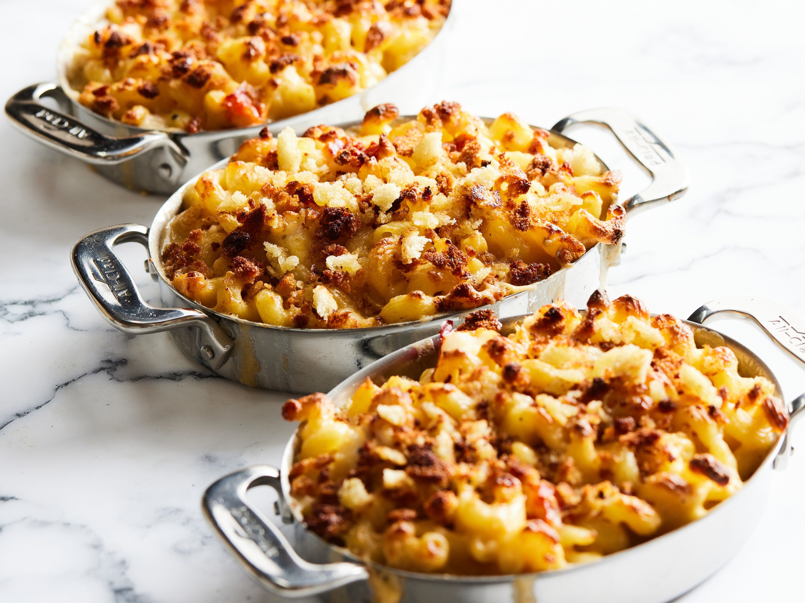

Lobster Mac and Cheese

Description
This baked and creamy classic mac and cheese dish adds a seafood twist with lobster tails.
Ingredients
- 2 teaspoons vegetable oil
- 2 lobster tails, split in half lengthwise and deveined
- 2 tablespoons butter
- 1 1/2 tablespoons all-purpose flour
- 1 1/2 cups cold milk
- 1/4 teaspoon paprika
- 1 pinch ground nutmeg
- 1 pinch cayenne pepper, or to taste
- 1/2 teaspoon salt, or to taste
- 3 drops Worcestershire sauce, or to taste
- 4 ounces grated sharp white Cheddar cheese
- 1 ounce grated Gruyere cheese
- 1 cup elbow macaroni, or more to taste
- 1/2 teaspoon fresh thyme leaves
Crumbs:
- 3 tablespoons panko bread crumbs
- 1 tablespoon melted butter
- 2 tablespoons grated Parmesan cheese
Steps
Preheat oven to 400 degrees F (200 degrees C). Butter two gratin dishes.
Heat oil in a skillet over high heat. Cook lobster tails in skillet until slightly golden and about halfway cooked through, about 2 minutes per side. Transfer tails to a plate to rest. When cool enough to handle, remove lobster meat from shells and chop meat. Reserve shells.
Melt 2 tablespoons butter in the same skillet over medium heat. Whisk in flour; cook and stir until a paste forms and raw flour taste cooks off, 1 to 2 minutes. Add cold milk to flour mixture; whisk until completely incorporated. Bring to a simmer; reduce heat to low, and stir in paprika, nutmeg, and cayenne pepper. Cook, stirring occasionlly, until thick, 3 to 4 minutes. Season sauce with salt.
Stir Cheddar cheese and Gruyere cheese into milk mixture until cheese is melted. Remove from heat and stir Worcestershire sauce into cheese sauce.
Bring a large pot of water with reserved lobster shells and a pinch of salt to a boil. Cook elbow macaroni in the boiling water, stirring occasionlly, until cooked through but firm to the bite, about 8 minutes. Remove lobster shells and set aside, or discard. Drain pasta.
Stir macaroni into cheese sauce with thyme leaves. Divide macaroni mixture between the two prepared gratin dishes. Top macaroni with chopped lobster meat, poking meat down into the macaroni mixture with a fork.
Stir bread crumbs and melted butter together in a bowl. Add Parmesan cheese and stir. Top each gratin dish with bread crumb mixture.
Bake in the preheated over until golden and bubbly, 15 to 20 minutes.
Chef's Note:
Make sure your mac and cheese mixture is wet and saucy in the pan, otherwise it might get dry when it bakes. Don't be afraid to add a splash of the pasta water to loosen things up.